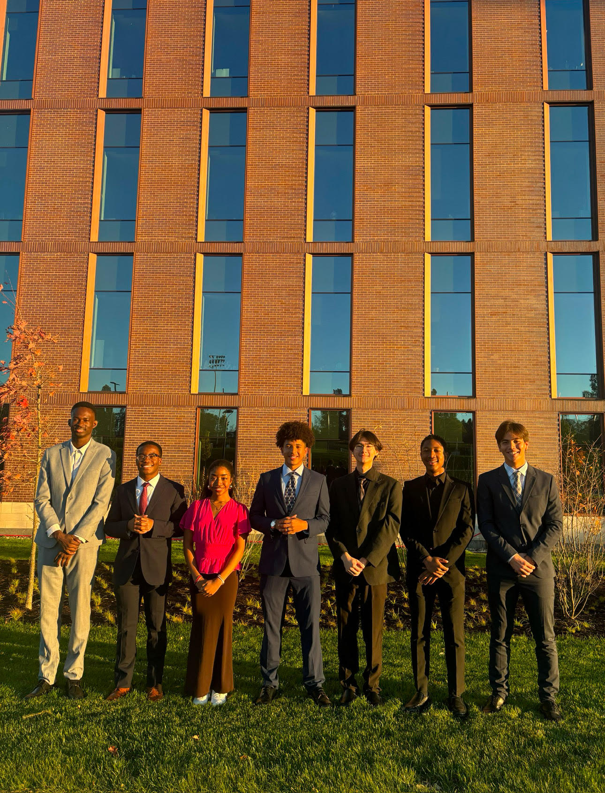
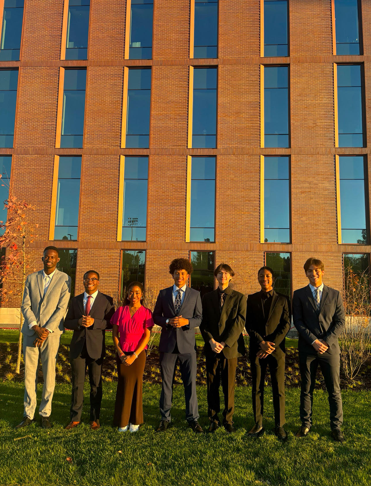

Meeting with Dr. Chita Das
 

On October 24, 2024, the MICS e-board held a meeting with Dr. Chita Das, the head department chair for computer science at Penn State, and Dr. Griselda Conejo Lopez, a professor for CMPSC 131. This meeting provided a unique opportunity to discuss initiatives for enhancing diversity and staying connected with the computer science department.
Dr. Chita Das highlighted the importance of improving diversity within the computer science field. Currently, women represent about 14% of computer science students, while underrepresented groups make up only about 5%. He expressed his commitment to supporting efforts that attract more women and underrepresented students to the program.
Dr. Das also emphasized the importance of staying connected with the computer science department. He offered to provide several names to expand our network and encouraged us to reach out if we need any assistance from the department. Additionally, he mentioned that the department would be open to hosting a presentation by MICS if needed.
Dr. Das suggested an exciting initiative to reach out to high schools. He proposed creating a new e-board position dedicated to visiting high schools, sharing information about Penn State and MICS, and encouraging prospective students to consider joining the program. He assured us that the computer science department would support these outreach efforts.
During the meeting, Dr. Conejo Lopez shared ideas about connecting with current students. She invited us to attend her recitations during the first week of classes to engage with CMPSC 131 students and introduce them to MICS. Additionally, Josiah our Employee Outreach Director, raised the idea of finding ways to reach out to DUS (Division of Undergraduate Studies) students. Dr. Das encouraged us to share our ideas for this initiative as well.
This meeting marked an important step toward strengthening our relationship with the computer science department and developing strategies to grow MICS while fostering a more inclusive community. We look forward to implementing these ideas and keeping the MICS community informed about our progress.